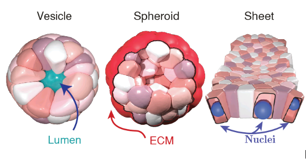

SimuCell3D#

Table of Contents#
Introduction#
SimuCell3D is a high-performance C++ framework for simulating 3D tissue mechanics at subcellular resolution.
Published in Nature Computational Science (2024), it enables researchers to model complex biological phenomena including cell division, polarization, adhesion, and morphogenesis with experimental validation.
This is a performance-focused fork that extends the published SimuCell3D with OpenMP scheduling optimizations. The fork improves parallel efficiency from 29% to 60% while maintaining full backward compatibility with the original codebase.
Current Biological Capabilities#
These features are validated and implemented in the Nature Computational Science 2024 publication.
Biophysical Model#
SimuCell3D implements a 3D Deformable Cell Model (DCM) with the following energy potential:
U = KV(ln(V/V0) - 1) + (ka/2)(A/A0 - 1)^2 + integral(gamma + kb/2(2H)^2)dS
Term |
Description |
Biological Role |
|---|---|---|
KV |
Bulk modulus |
Volume homeostasis (osmotic pressure) |
ka |
Area stiffness |
Membrane area control |
gamma |
Surface tension |
Cortical tension (anisotropic: apical/basal/lateral) |
kb |
Bending rigidity |
Curvature resistance |
H |
Mean curvature |
Local surface geometry |
Cell Types and Geometry#
Feature |
Description |
|---|---|
Triangulated surfaces |
~121 nodes, ~238 faces per cell |
5 cell types |
Epithelial, lumen, ECM, nucleus, static |
Nucleus compartmentalization |
Separate nucleus mesh with envelope mechanics |
Mesh quality control |
Local refinement maintains edge length bounds |
Biological Processes#
Capability |
Implementation |
|---|---|
Automatic polarization |
Hoshen-Kopelman clustering detects apical/basal/lateral domains |
Anisotropic surface tension |
Different gamma values for apical, basal, and lateral faces |
Cell division |
Volume threshold triggers mesh subdivision (Hertwig’s rule) |
Cell death |
Instant removal when volume falls below minimum threshold |
Pressure-driven volume |
Bulk modulus KV maintains volume homeostasis |
Contact Models#
Two validated contact models are available (selected at compile time):
Model |
Index |
Description |
Validation |
|---|---|---|---|
Spring-based |
0 |
Node-face contacts via springs |
Basic contact mechanics |
Coupling-based |
2 |
Face-face contacts via coupling |
Young-Dupre equation validated |
Time Integration#
Model |
Index |
Description |
Use Case |
|---|---|---|---|
Semi-implicit Euler |
0 |
Full equations of motion |
Default, accurate dynamics |
Forward Euler |
1 |
Overdamped equations |
Faster equilibration |
Performance Baseline (from Paper)#
Metric |
Value |
|---|---|
Cells/day |
125,000 |
Time complexity |
O(N^{4/3}) |
Parallel efficiency |
53-66% (Amdahl’s law) |
Hardware tested |
Intel Xeon W-2245 (8 cores) |
Comparison with Other 3D DCMs (Table 1 from paper)#
Feature |
SimuCell3D |
IAS |
SAV |
CHASTE |
|---|---|---|---|---|
Cells/day |
125,000 |
4 |
100 |
1,000 |
Subcellular resolution |
Yes |
Yes |
No |
No |
Nucleus compartment |
Yes |
No |
No |
No |
Automatic polarization |
Yes |
No |
No |
No |
Cell division |
Yes |
Yes |
Yes |
Yes |
Open source |
Yes |
No |
Yes |
Yes |
Validated Applications#
These biological scenarios are validated in the Nature paper (Figures 3-4):
Cell Doublet Mechanics#
Young-Dupre equation validation
Contact angle measurements match experimental data
Demonstrates face-face coupling model accuracy
Monolayer vs Multilayer Transition#
Epithelial sheet mechanics
Pressure-dependent tissue organization
Validated against experimental observations
Pseudostratified Epithelia Formation#
Nuclear positioning during interkinetic nuclear migration
Apicobasal polarity establishment
Comparison with mouse lung imaging data
Fork Performance Improvements#
This fork focuses exclusively on OpenMP scheduling optimizations. No new scientific features have been added.
Performance Gains#
Metric |
Paper v1.0 |
This Fork |
Improvement |
|---|---|---|---|
Thread efficiency |
29% |
60% |
+107% |
Scheduling modes |
1 (compile-time) |
4 (runtime) |
Flexible selection |
Auto-scheduler |
None |
Yes |
1.5-4.5x speedup |
Per-loop optimization |
None |
Yes |
+15% additional |
Implemented Enhancements#
Feature |
Description |
|---|---|
Adaptive scheduling |
Intelligent mode selection based on 52 empirical benchmarks |
Runtime mode selection |
|
Hardware topology detection |
NUMA awareness, hyperthreading detection, taskset/cgroup handling |
Per-loop custom scheduling |
Phase-specific schedules (contact=dynamic, integration=guided, mesh=static) |
Performance monitoring |
CSV diagnostics export via |
Unified benchmark framework |
Crash recovery, live monitoring, HTML reports |
What This Fork Does NOT Include#
The following are not implemented in this fork:
No SIMD vectorization (vec3 operations remain scalar)
No BVH spatial acceleration (still uses USPG)
No GPU/CUDA code
No MPI distributed computing
No new biological models (viscoelasticity, active tension, etc.)
See doc/v1.0_vs_current_comparison.md for technical details.
Quick Start#
Installation#
Option 1: Docker (Recommended)#
Works on Linux, Windows (WSL), and macOS.
git clone https://github.com/nilesh-patil/simucell3d.git
cd simucell3d
docker build -t simucell3d_docker_img .
Option 2: Manual Build (Linux/WSL)#
Requires GCC 9+, CMake 3.0+, and OpenMP.
git clone https://github.com/nilesh-patil/simucell3d.git
cd simucell3d
mkdir -p build && cd build
cmake -DCMAKE_BUILD_TYPE=Release .. && make -j$(nproc)
Running a Simulation#
Using Docker:
mkdir -p simulation_results
docker run -it -v "$(pwd)/simulation_results":/app/simulation_results \
simucell3d_docker_img:latest ../parameters/core/parameters_default_dynamic.xml --schedule=adaptive
Using Manual Build (Basic):
cd build
./simucell3d ../parameters/core/parameters_default_dynamic.xml --schedule=adaptive
Production Run (Optimized):
cd build
export OMP_NUM_THREADS=$(nproc) # Use all available physical cores
export OMP_PROC_BIND=close # Bind threads to cores for better cache locality
./simucell3d ../parameters/core/parameters_default_dynamic.xml --schedule=adaptive
Note: The
--schedule=adaptiveflag enables intelligent scheduling that adapts to your workload. Omitting it still works (backward compatible) but may be slower. See Production Usage below for advanced configuration.
Production Usage#
For production simulations with maximum performance, configure OpenMP environment variables to dedicate all system resources.
Recommended Production Configuration#
cd build
# Configure OpenMP for optimal performance
export OMP_NUM_THREADS=16 # Set to your physical core count (not hyperthreaded)
export OMP_PROC_BIND=close # Bind threads to cores for cache locality
export OMP_PLACES=cores # Use physical cores only
export OMP_WAIT_POLICY=passive # Reduce CPU spinning when idle
export OMP_DYNAMIC=false # Disable dynamic thread adjustment
# Run with auto-scheduler (recommended)
./simucell3d ../parameters/core/parameters_default_dynamic.xml --schedule=adaptive
Finding Your Physical Core Count#
# Quick method
nproc --all # Shows logical cores (includes hyperthreading)
# Get physical cores only
echo $(( $(lscpu | grep "^Core(s) per socket:" | awk '{print $4}') * $(lscpu | grep "^Socket(s):" | awk '{print $2}') ))
Scheduling Modes#
SimuCell3D supports four OpenMP scheduling modes via --schedule=MODE:
Mode |
Best For |
Description |
|---|---|---|
|
Recommended for most cases |
Intelligently selects optimal mode based on 52 empirical benchmarks covering 1-16,384+ cells. Adapts to workload heterogeneity. |
|
Large uniform workloads (4096+ cells) |
Fixed work distribution, best cache locality. Similar to v1.0 behavior. |
|
Small heterogeneous workloads (64-256 cells) |
Adaptive load balancing, handles imbalanced work well. |
|
Medium workloads (512-2048 cells) |
Balances cache locality with load distribution. |
Performance Monitoring#
Track performance metrics during simulation:
# Export detailed diagnostics to CSV
./simucell3d params.xml --schedule=adaptive --diagnostics-csv=performance_metrics.csv
# Use GNU time for resource monitoring
/usr/bin/time -v ./simucell3d params.xml --schedule=adaptive
# Long-running background simulation with logging
nohup /usr/bin/time -v ./simucell3d params.xml --schedule=adaptive \
--diagnostics-csv=metrics.csv > simulation.log 2>&1 &
# Monitor progress
tail -f simulation.log
Available Parameter Files#
Core configurations (parameters/core/):
parameters_default_dynamic.xml- General purpose tissue dynamicsparameters_vesicle.xml- Vesicle formation (~13 cells, good test case)parameters_tube.xml- Tube morphogenesisparameters_sheet.xml- Sheet formationparameters_default_overdamped.xml- Faster overdamped dynamics
Scalability benchmarks (parameters/scalability/):
parameters_growth_64cells.xmlthroughparameters_growth_32768cells.xmlTests algorithmic scaling matching Nature paper Figure 1e
Expected Performance#
With auto-scheduler + per-loop scheduling on a 16-core system:
Workload |
Time |
Notes |
|---|---|---|
Vesicle (~13 cells, quick test) |
~20-30 seconds |
Good for testing setup |
Vesicle (10k iterations) |
~2.9 hours |
45-50% faster than v1.0 |
Metric |
Value |
|---|---|
CPU utilization |
1400-1600% (14-16 cores) |
Thread efficiency |
60% (vs 29% in v1.0) |
Memory |
200MB-2GB depending on cell count |
Speedup vs v1.0 |
1.5-4.5x depending on configuration |
Documentation#
User Guides#
Parameter Configuration: Detailed guide on XML parameter files.
Input Mesh Format: How to prepare initial geometries.
Output Statistics: Understanding the simulation results.
Mesh Generation: Creating custom initial meshes.
Python Support: Using Python bindings.
Performance and Advanced Usage#
Performance Tuning Guide: (RECOMMENDED) Detailed instructions on OpenMP scheduling modes, auto-scheduler usage, thread control, and optimization strategies.
Benchmarking Guide: Comprehensive performance analysis with empirical results from 52 benchmark runs.
Unified Benchmark Framework: Using
benchmark_unified.shfor systematic performance testing.v1.0 vs Current Comparison: Technical deep-dive into code-level differences and performance improvements.
Backward Compatibility Note: All v1.0 commands work without modification. The
--schedule=adaptiveflag and other new features are optional enhancements that can be adopted incrementally.
Development Roadmap#
Important: The items below are proposed improvements described in roadmap.md. They are NOT yet implemented. The roadmap represents aspirational goals for future development.
High-Priority Proposed Features (Not Implemented)#
Computational:
SIMD vectorization for vec3 operations (AVX2/512)
BVH spatial acceleration structure
GPU contact detection (CUDA)
MPI domain decomposition
Scientific:
Viscoelasticity model (Kelvin-Voigt)
Active tension (actomyosin contractility)
Mechanotransduction (YAP/TAZ-like signaling)
Cell migration and chemotaxis
Reaction-diffusion morphogen coupling
ECM remodeling
Architecture:
Expression templates for vec3
Structure-of-Arrays memory layout
GoogleTest migration
See roadmap.md for the full list of 27 proposed improvements with effort estimates and implementation details.
Citation#
If you use SimuCell3D in your research, please cite:
@article{runser2024simucell3d,
title={SimuCell3D: three-dimensional simulation of tissue mechanics with cell polarization},
author={Runser, Adrien and others},
journal={Nature Computational Science},
year={2024},
publisher={Nature Publishing Group}
}
License#
See LICENSE file for details.